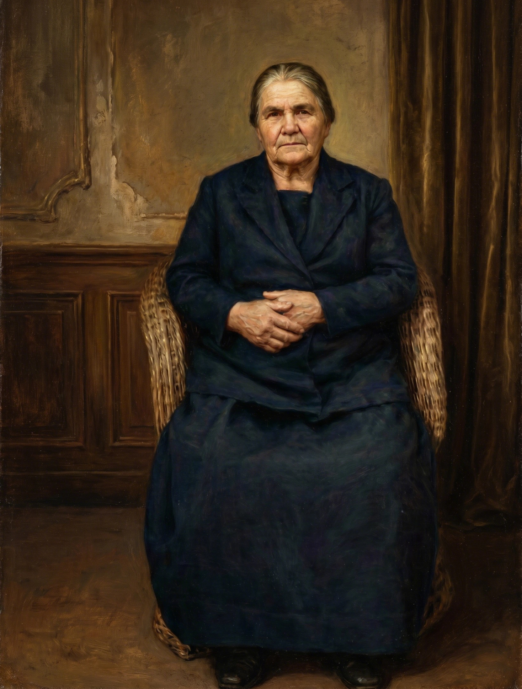

Pai de Raul
António Baptista
(❤ N. 27/12/1865 / †) 💍 Casou a 02/09/1889

Mãe de Raul
Maria de Jesus Feixeira
(❤ N. Meados/1868 / †)
Raul Baptista
N.06/01/1906 †
📍 Lubango, Angola
💍 Casamento:Arminda da Silva Baptista †
📍 Lubango, Angola
💍 Casamento:Arminda da Silva Baptista †

Filho
Aurélio da Silva Baptista
N.
📍 Lubango, Angola 💍 Casamento com Maria Rosa
📍 Lubango, Angola 💍 Casamento com Maria Rosa
Neto
Aurelio Baptista
N.1960

Bisnata
Mariana Baptista
Bisneto
João Baptista
Neto
Álvaro Baptista
N.
📍
📍
Neto
João Baptista
N. (†)
📍
📍
Neta
Teresa Baptista Lopes
N. 1954 (†) Casamento com
Bisneta
Carla A. Baptista Camacho
Trisneta
Ana Camacho
Trisneta
Daniela Camacho
Filha
Ione Baptista
N.1927
Lubango, Angola Casamento
Lubango, Angola Casamento
Neto
José Manuel Baptista Almeida
Bisneta
Ione Almeida
Filha
Mariana Baptista
N.1929
📍 Lubango, Angola 💍 Casamento
📍 Lubango, Angola 💍 Casamento
Filha
Maria Juliana Baptista
N.
📍 Lubango, Angola 💍 Casamento
📍 Lubango, Angola 💍 Casamento
Neta
Maria Gomes